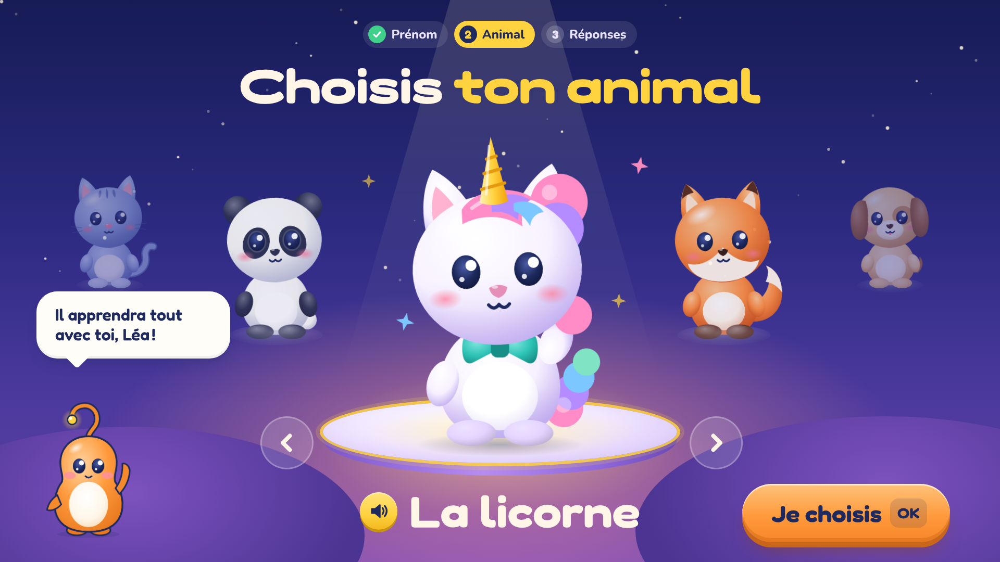
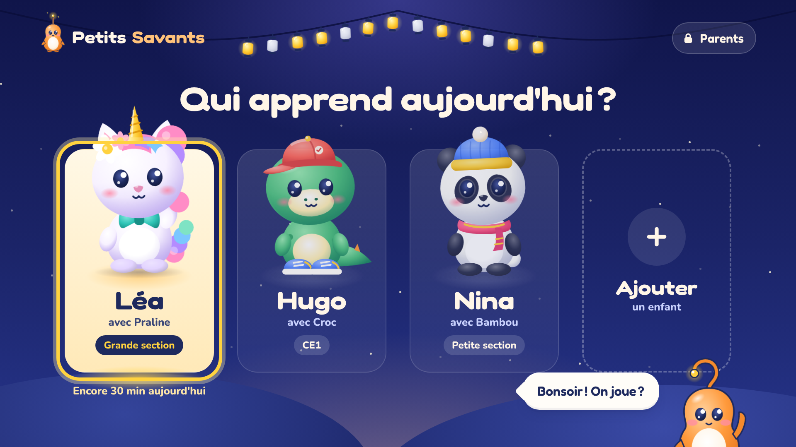
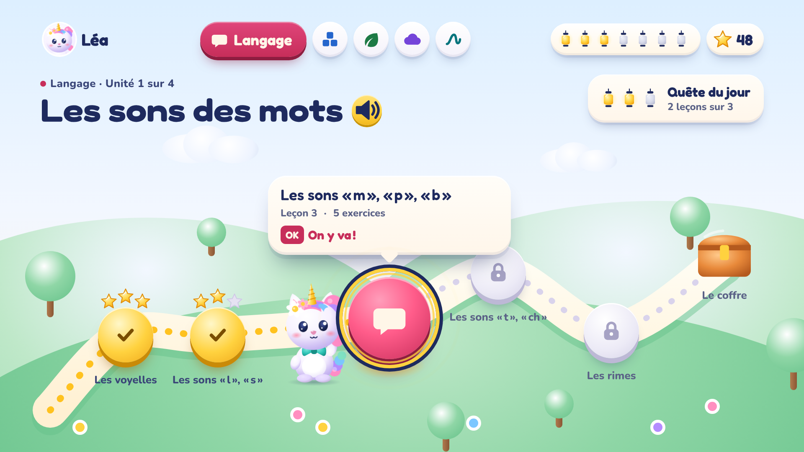
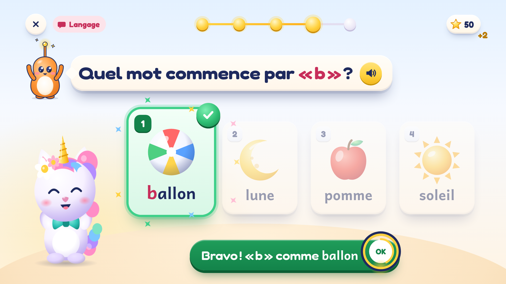
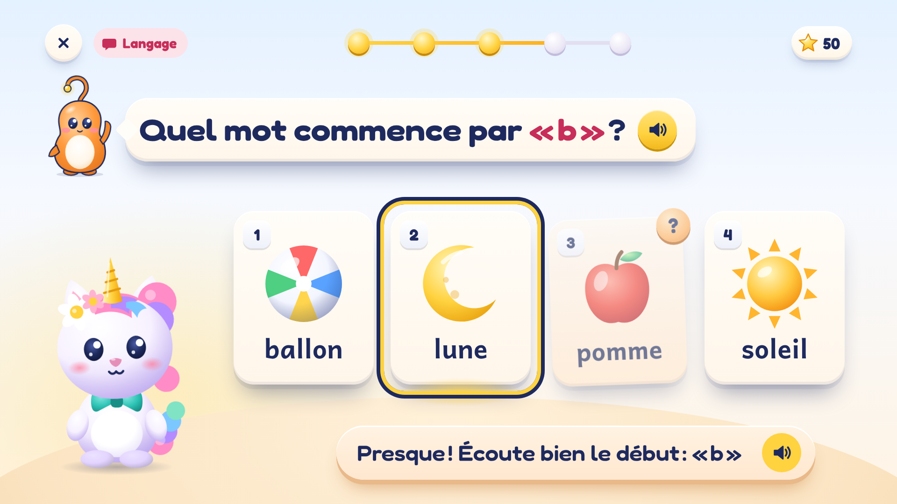
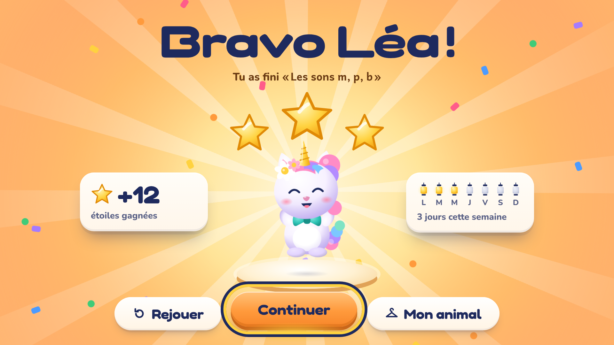
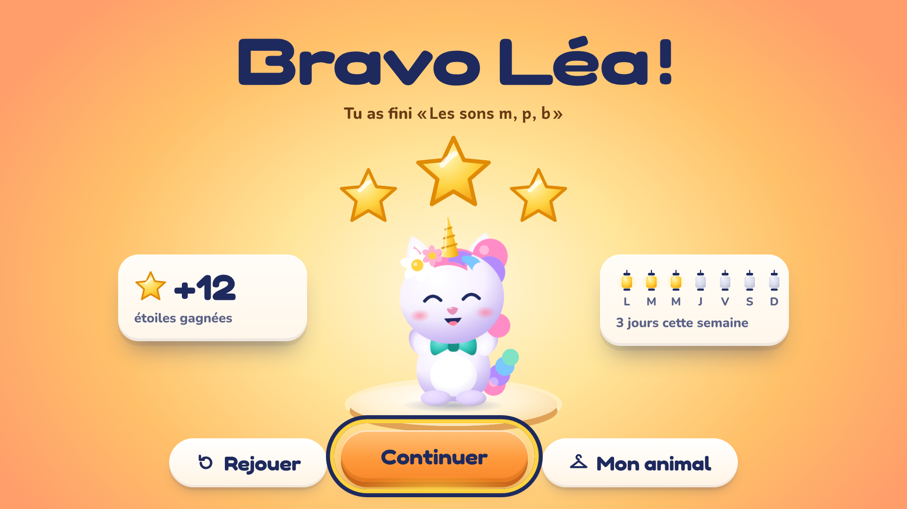
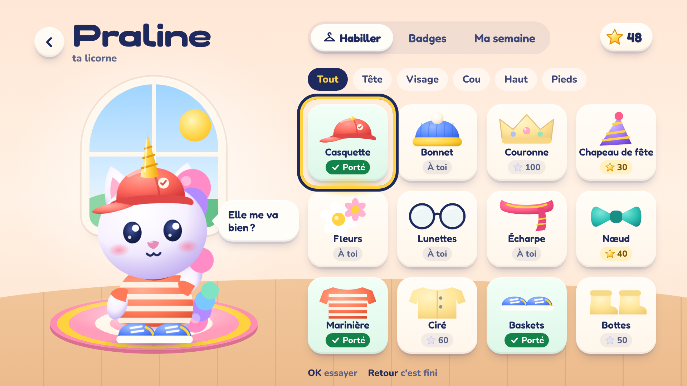
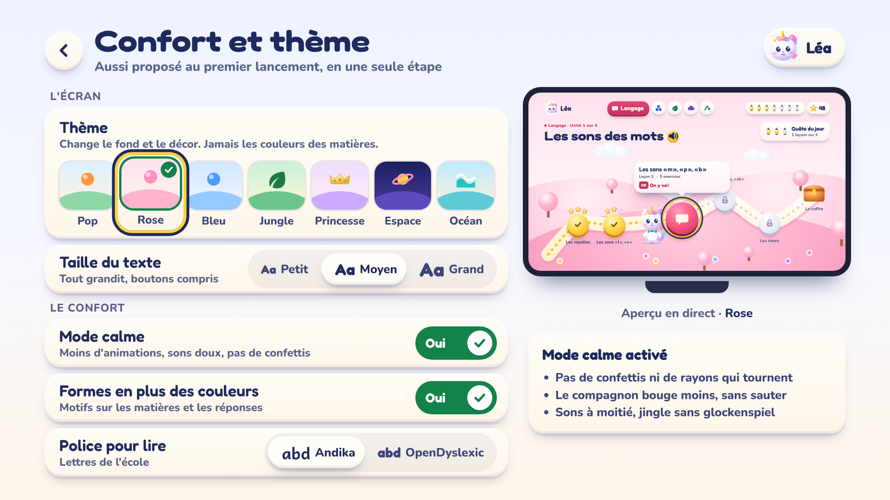
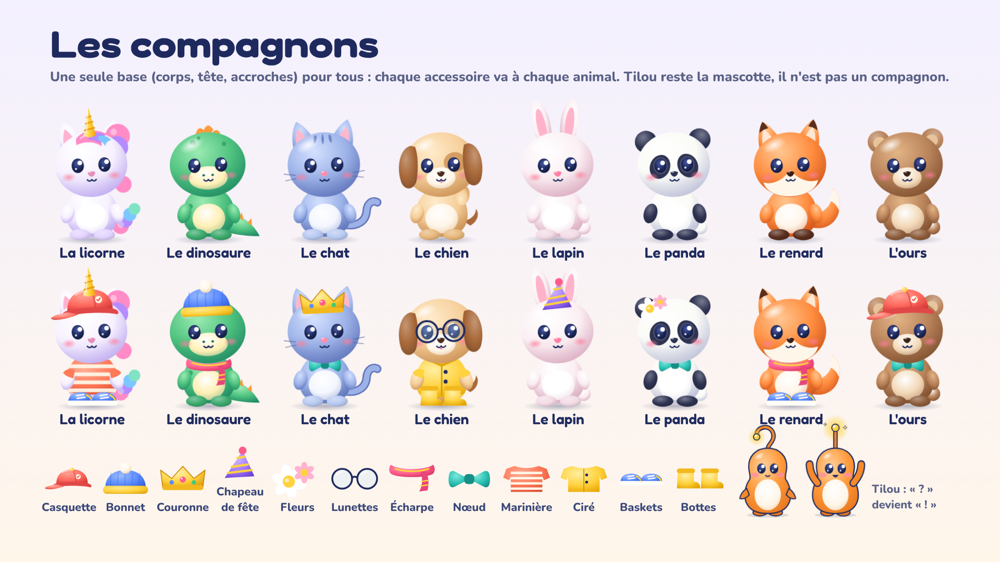

Maquettes 1920×1080 navigables à la télécommande (flèches, OK). Paramètres de test : ?theme=rose|bleu|jungle|princesse|espace|ocean · ?calm=1 · ?etat=presque (exercice).

1 · Premier lancement : choisis ton animal◀ ▶ fait tourner le manège
2 · Qui apprend aujourd'hui ?Ambiance veillée, l'animal du profil fait coucou
3 · Le parcours des leçonsPaysage en pâte douce, la route passe par les leçons
4 · Exercice, bonne réponseJingle « Ça pétille » au premier appui sur une touche
4 bis · Exercice, « Presque »Ni rouge, ni secousse, la réponse n'est pas montrée
5 · Fin de leçonCélébration courte, puis calme
5 bis · Fin de leçon en mode calmeSans confettis ni rayons
6 · Mon animal (habillage)OK sur un objet : l'animal le porte
7 · Confort et thèmeL'aperçu suit le thème qui a le focus
Planche des compagnons8 animaux, 12 accessoires, Tilou